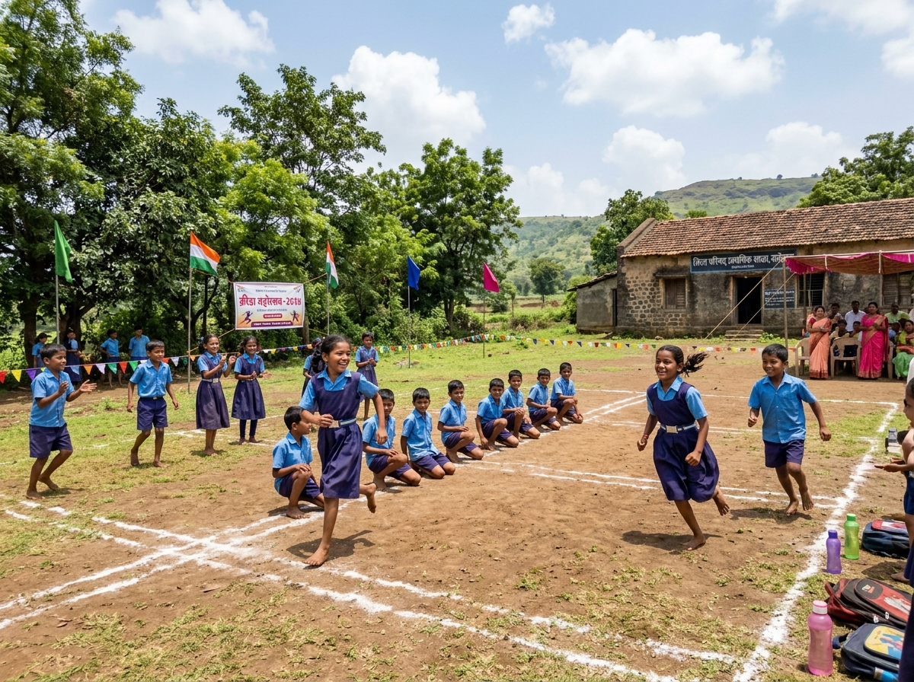
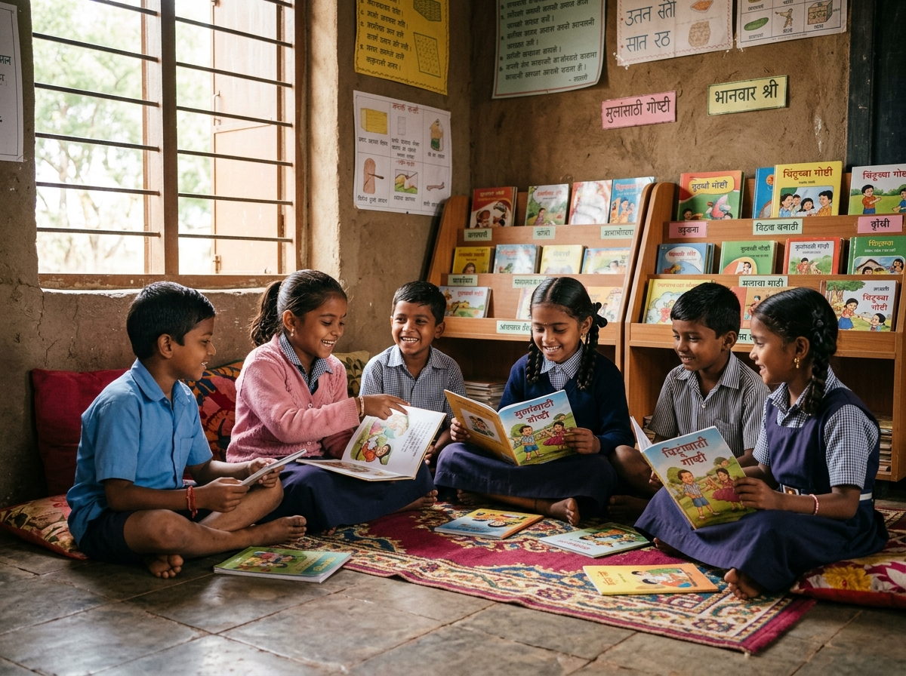
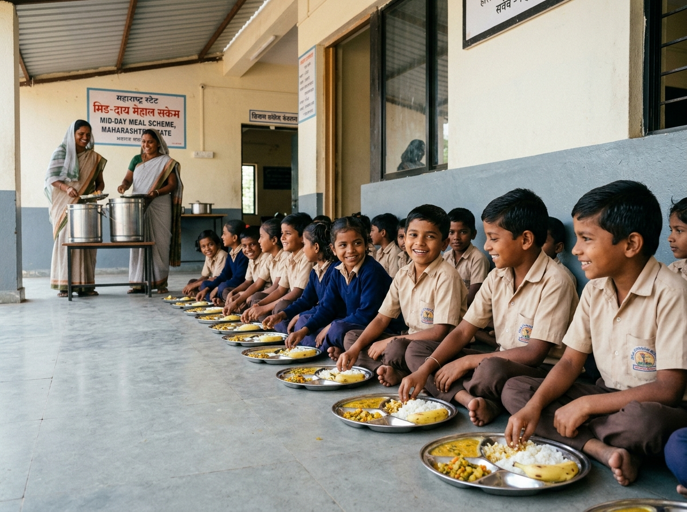

Primary School Facilities
Providing students with clean, hygienic, and conducive amenities for everyday learning and growth.
 ✓ Confirmed Facility
✓ Confirmed Facility
🏫 Primary Classrooms
Well-ventilated and naturally lit classrooms equipped with student benches, teacher tables, blackboards, and educational wall displays in Marathi and English.
- • Adequate natural lighting & cross-ventilation
- • Educational wall charts and learning corners
- • Safe and durable child-friendly furniture
💧 Clean Drinking Water
Dedicated drinking water access for all students and teachers with regular quality monitoring to ensure clean, safe, and hygienic hydration throughout the school day.
- • Filtered / clean source of drinking water
- • Regular cleanliness maintenance
- • Easily accessible to all primary children
🧼 Sanitation & Washrooms
Separate, functional toilet facilities for boys and girls with running water connection, promoting hygiene education and health safety under Swachh Bharat Swachh Vidyalaya.
- • Separate units for boys and girls
- • Handwashing area with soap facility
- • Daily hygiene and cleaning protocols

✓ Confirmed Facility⚽ Playground & Sports Area
Open ground within the school boundary for daily morning assemblies, drill exercises, physical training, and traditional Indian team sports like Kho-Kho and Kabaddi.
- • Safe outdoor play area with natural grass/ground
- • Marked play zones for traditional games
- • Space for annual sports competitions

✓ Confirmed Facility📚 Bal Vachanalaya / Reading Corner
Collection of Marathi storybooks, illustrated children's encyclopedias, folk tales, and pictorial reading books designed to spark early reading curiosity.
- • Age-appropriate illustrated storybooks
- • Reading sessions during library hour
- • Open access to foster independent reading

✓ Confirmed Facility🍲 Mid-Day Meal (PM POSHAN)
Government-sponsored daily hot cooked, hygienic, and nutritionally balanced meal prepared for all enrolled primary students to support child health and regular attendance.
- • 100% free daily wholesome lunch
- • Monitored by School Management Committee (SMC)
- • Weekly balanced menu with pulses and grains
 ✓ Confirmed Facility
✓ Confirmed Facility
🌳 Green School Campus
A peaceful, eco-friendly rural campus surrounded by trees and green plants, providing a calm and refreshing atmosphere free from traffic noise and city pollution.
- • Boundary wall and secured school perimeter
- • Tree plantation area maintained by students
- • Clean open courtyard for school events
🖥️ Digital Learning & Smart Tools
Audio-visual aids and digital educational content integration to supplement classroom learning.
- • Specific digital equipment details will be updated by administration
- • Educational e-content as per SCERT guidelines
🩹 First Aid & Health Check-Up
Equipped with basic first-aid medical kit for minor injuries and regular health check-up visits by the local Primary Health Centre (PHC) medical team.
- • Essential first-aid supplies on premises
- • Annual health, vision, and dental check-up drives
- • Deworming and nutritional supplementation support
📝 Note for School Administrator / Head Teacher
To add new photos or update facility specifications (such as smart classroom equipment, solar power, or new building blocks), please replace the relevant placeholder cards in the HTML source file or contact the web administrator.